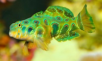

Goby---->
- Goby fish belongs to very large fish family
- Both tropical and temperate seas contain them, and their distribution is worldwide.
- Intriguing behaviours exhibited by many gobies include burrowing in the substrate and forming symbiotic partnerships with other species.
